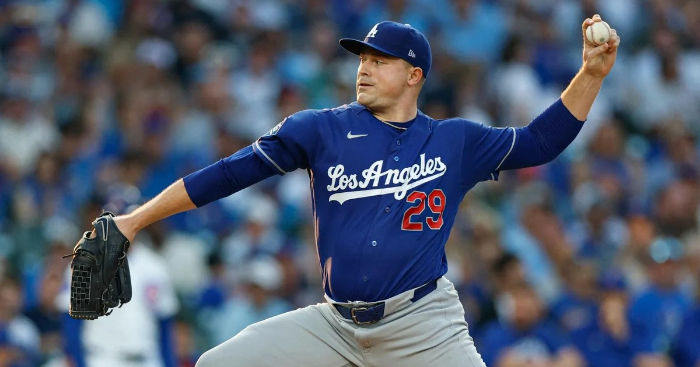

Mets offer Tarik Skubal nine years, nearly $400 million — the biggest pitcher offer in baseball history
The Mets have offered free-agent ace Tarik Skubal a nine-year deal worth nearly $400 million, a reported offer that would make him the highest-paid pitcher in baseball history — if he takes it.

Disclosure: this post contains affiliate links. I earn a commission on qualifying purchases.
The offer
The New York Mets have offered two-time Cy Young Award winner Tarik Skubal a nine-year contract worth nearly $400 million. The report comes from former Mets general manager Jim Duquette, now an MLB Network Radio analyst, who said Friday that multiple MLB sources confirmed the terms. Reuters, USA Today, and the New York Post have all carried the report.
No deal is done. This is an offer — the first reported one of Skubal's free agency — and the Mets are not the only team at the table.
What the money means
If Skubal takes it, the deal would make him the highest-paid free-agent pitcher in baseball history. The total would pass the 12-year, $325 million contract Yoshinobu Yamamoto signed with the Dodgers in December 2023. The average annual value, about $44.4 million, would top the $43.3 million the Mets themselves paid Max Scherzer and Justin Verlander, the current record for a free-agent starting pitcher.
Those numbers tell you how the Mets see him: not as a good arm to add, but as the ace their rotation has been missing.
Why the Mets are all in
New York entered the offseason without a veteran ace. Rookie Nolan McLean is the club's top returning starter, and the rest of the projected 2027 rotation is a mix of upside and question marks. The Mets met with Skubal in California on Monday, and owner Steve Cohen is expected to be "all in" on landing him, according to the Post's Jon Heyman.
Skubal turned 30 on Friday. He split 2026 between Detroit and Los Angeles after a midseason move, going 12-7 with a 2.72 ERA in 26 starts, and he won the Cy Young in back-to-back seasons, 2024 and 2025. Across 163 career games he owns a 3.02 ERA.
Who else is in it
The Dodgers, the incumbent after acquiring him in August, have met with Skubal, as have the Blue Jays and the Padres. MLB Network reported a fifth team met with him over Zoom. The Dodgers and Blue Jays remain in the hunt, and Skubal spoke after the Dodgers' postseason exit about his love for the city — so the Mets' offer is an opening move, not a finish.
What happens next
Skubal is expected to sign before a lockout that could begin in early December, which puts a clock on all of this. The Mets have set the market with a record number. Now the question is whether anyone tops it — or whether Skubal takes the biggest offer a pitcher has ever been handed.
Gear up: Fanatics